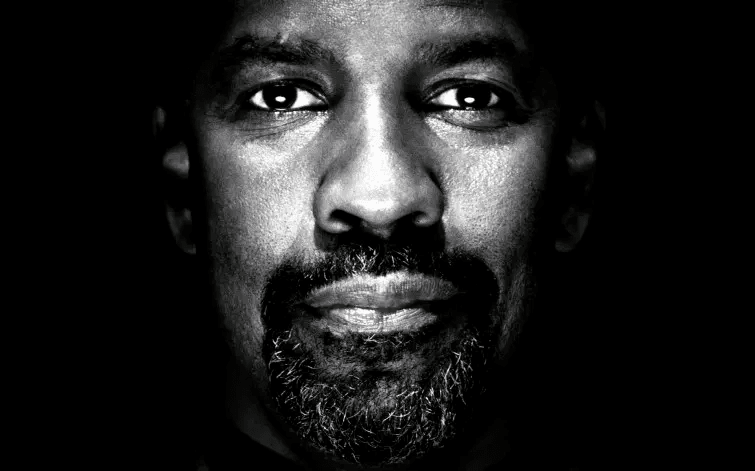
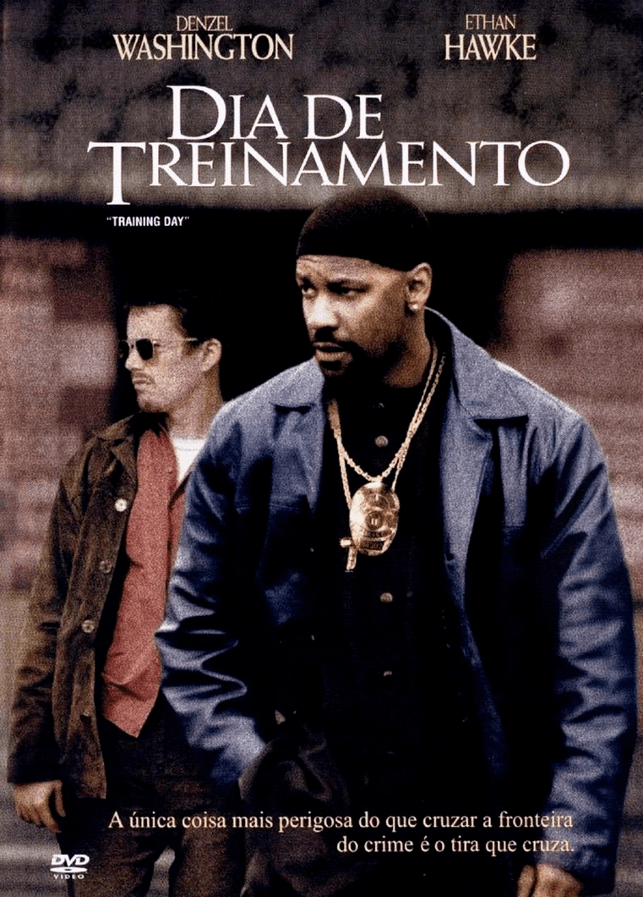
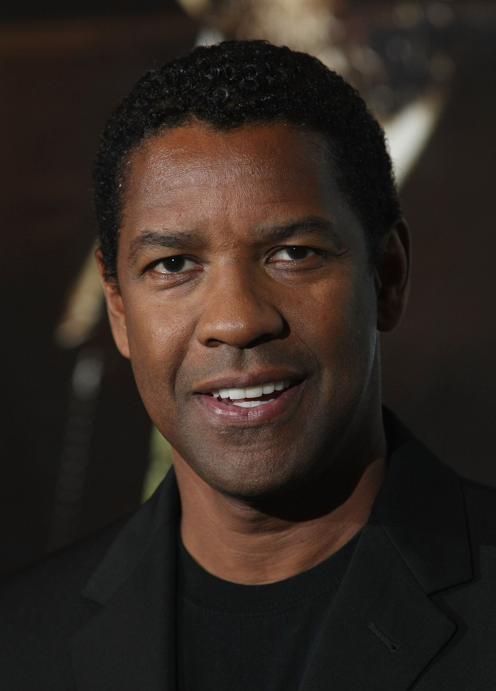
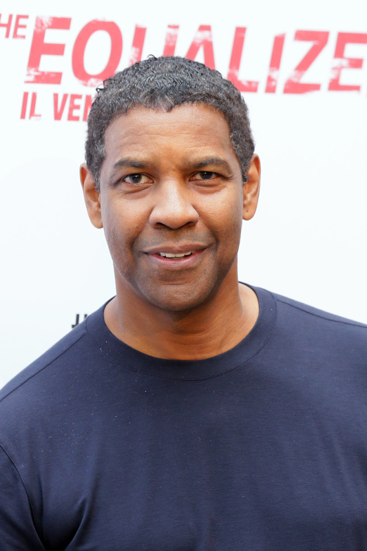

Denzel Hayes Washington Jr.
Nascido em 28 de dezembro de 1954
(Mount Vernom, New York, EUA)
68 anos
Nascido em 28 de dezembro de 1954
(Mount Vernom, New York, EUA)
68 anos
"Quando era jovem, não planejava ser ator, porque não via pessoas como eu nos filmes". Denzel Washington, cresceu sem ídolos negros para se inspirar (com a exceção de Sidney Poitier), então, decidiu converter-se nesse líder. Está há 30 anos encabeçando o pelotão, abrindo caminho para os que vêm atrás. Derrubou barreiras raciais, preconceitos e clichês como mais gosta Hollywood: fazendo dinheiro.

Filmes

Jake Hoyt, um jovem policial de Los Angeles, entra para a equipe de narcóticos e recebe como oficial de treinamento e parceiro Alonzo Harris, um policial veterano e desonesto. Ao longo do dia, o novato é exposto a todo tipo de corrupção e acusado de assassinato, acontecimentos que são orquestrados por Alonzo a fim de encobrir um engano cometido por ele junto à máfia russa.
O famoso líder que teve o pai assassinado pela Ku Klux Klan e sua mãe internada por insanidade. Enquanto esteve preso descobriu o islamismo. Malcolm faz sua conversão religiosa como um discípulo messiânico de Elijah Mohammed (Al Freeman Jr.). Malcolm X ora uma doutrina de ódio contra o homem branco até que, anos mais tarde, na Meca abranda suas convicções.Se converteu ao original islamismo e se tornou um "Sunni Muslim", mudando o nome para El-Hajj Malik Al-Shabazz, mas o esforço de quebrar o rígido dogma da Nação Islã teve trágicos resultados.
Uma grande onda de sequestros e criminalidade varre a Cidade do México, fazendo com que muitos de seus cidadãos mais ricos contratem guarda-costas para seus filhos. John Creasy é um ex-agente da CIA. Sem emprego e bebendo mais do que deveria, ele aceita a proposta de ser guarda-costas da pequena Pita, uma garota de 9 anos que é filha de um industrial. O sequestro de Pita faz com que ele, mesmo ferido, parta para resgatá-la a qualquer custo.
Galeria


